freedos-repo
Contents
Introduction
Installation instructions
Program launchers and environments
Productivity applications
Graphics applications
Programming languages etc.
Games
Eye Candy
Command-line utilities
Terminate-and-stay-resident utilities
Miscellaneous
FreeDOS tips
Introduction
This is a repository of FreeDOS-compatible freeware and OSS software. Not "abandonware", by which I mean that you will not find formerly commercial software here that have not been explicitly made open-source or at least freeware.
However, non-crippled shareware with a single nag screen at the beginning or end is fair game. Whether you are going to try to send money to a developer from thirty or forty years ago who could be dead by now is up to you.
Having said that, there are a lot of little utilities from a kinder, gentler age, when people would just make their stuff available without worrying about licenses. These will be regarded as public domain until someone informs me otherwise.
Source code is included wherever possible.
This is not meant to be a conclusive collection of DOS applications. These are apps that I have tested on FreeDOS 1.2 (on bare silicon and in the DOSBox emulator) and that I find useful, fun or interesting. If you need something more comprehensive, try this site or this one. I am not a gamer at all, so if that is what you are looking for, well, sorry, I only have a few of the simplest ones.
On a standard FreeDOS installation, Option 1 of the initial menu is
1 - Load FreeDOS with JEMMEX, no EMS (most UMBs), max RAM free
and that is the setting under which I test these programs. I have seen graphical programs, in particular, crash all too often under EMM386 in Option 2. If one of these apps absolutely requires Expanded Memory, I will document it here.
I may also slip in a few little apps that I wrote myself. You will know them by a certain primitive look and feel :-)
Return to Table of Contents
To install these packages:
Download the package, transfer it to your FreeDOS system and extract the zip file to the ROOT directory (C:\).
unzip packagename.zip -d c:\
You might be tempted to use the DosZip Commander, which is bundled with FreeDOS and can be called up with the command dz, or similar utilities. I advise against this. These packages were actually created under Linux and you may come across weird crc errors if you use dz. The command line works fine.
It is important to extract these packages to the root directory! This is different from official FreeDOS packages, wich expect to be extracted to C:\FDOS. There is an actual reason for this. Some of these very old programs are not relocatable: They have hardcoded paths inside them and will crash or refuse to load if you try to run them from a strange directory. I have tried really hard to stick to the FreeDOS file system and not litter your root with directories, but sometimes I simply can't. Better then, to have a single installation procedure for all my packages.
Programs that do not run directly from c:\FDOS\BIN will have a convenient batch file placed in C:\FDOS\LINKS. If a program requires changes to CONFIG.SYS or AUTOEXEC.BAT, that will be documented here.
Sorry, there is no uninstall facility. But most of these packages consist of a single directory in C:\FDOS\PROGS (or C:\FDOS\DEVEL), a batch file in C:\FDOS\LINKS and an information file in C:\FDOS\APPINFO, so it shouldn't be too hard.
Return to Table of Contents
Program launchers and environments
- LCARS24 - Emulates the look and feel of a certain well-known science fiction computer system.
- Get your sound card working before you install this.
- Originally from SourceForge.
- GPL v2, source included.

Return to Table of Contents
Productivity applications
- ABBREVV - A menu-oriented DOS application to view and maintain a list of
abbrevations.
- Freeware by J R Ferguson for non-commercial purposes.
- Acronyms may be up to 7 characters long, the description can be any text up to 69 characters.
- It shows one or more sorted abbrevation lists, allows you to insert, change or delete entries and search for duplicates.
- You can also merge two or more abbrevation lists into a single one.
- The program interface is quite
intuitive, offering mouse support, Windows-like menus and multiple document subwindows.
- The program saves its last used settings in a file named ABBREVV.SET, so it can automatically open the same abbrevation file windows the next time you start it.
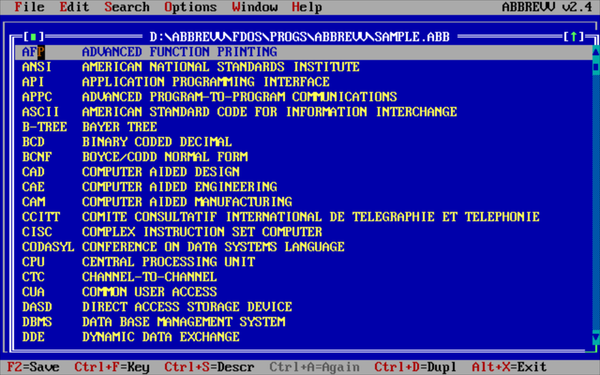
- Acrobat Reader - The one and only time Adobe, Inc made a PDF viewer for DOS.
- I have taken care of the installation for you and "registered" it to "FreeDOS User".
- You can start the program with either acrodos or acrobat: the two batch files are identical.
- If you have graphical problems, try acrodosu or acrobatu: these load the UNIVBE driver before running Acrobat itself. Makes no difference on my system, but it might help with really old display cards.
- Acrobat for DOS can only display PDFs built to an early specification. But there are ways to convert a modern PDF to an older version: see here and here for some ideas on the subject.
- in CONFIG.SYS, your FILES= statement should be at least 20. The FreeDOS default is 40, so that should not be a problem.

- AS-EASY-AS 5.7 - Spreadsheet
- In its day, this was THE shareware competotor to Lotus 1-2-3.
- Now freeware courtesy of Trius, Inc.
- Packaged as registered to "FreeDOS User" with serial number already filled in (but see the LSM file if you need it for some reason).
- Also contains the manual in PDF format.
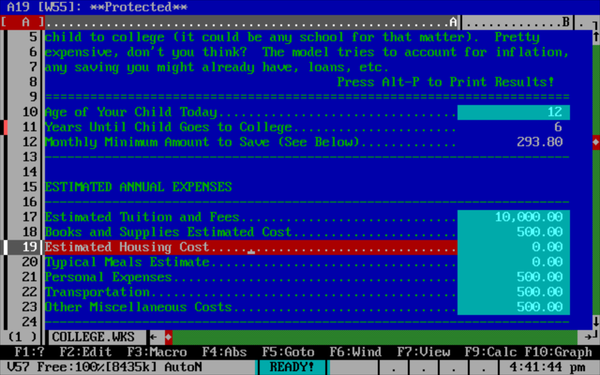
- Breeze by Kevin Solway - Perhaps the most comprehensive text editor ever written for DOS.
- Ignore all the shareware documentation: according to the website this is now freeware.
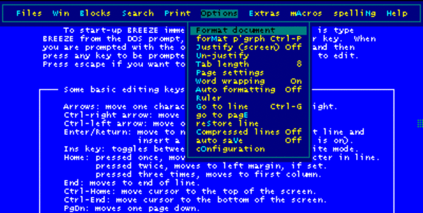
- DataPerfect 2.6 - A relational database.
- DataPerfect, originally published by WordPerfect Corp, and later by Novell, was a fast, memory efficient, but capable relational database for DOS.
- WordPerfect Corp sold the product alongside their other DOS based office products, such as WordPerfect and PlanPerfect.
- In 1995 Novell released DataPerfect as freeware and development was continued by its original author, Lew Bastian until about 2008.
- Packager's note: I'll admit, I can't make head or tails of this program, but there are people who swear by it. You can get supporting programs and files here.
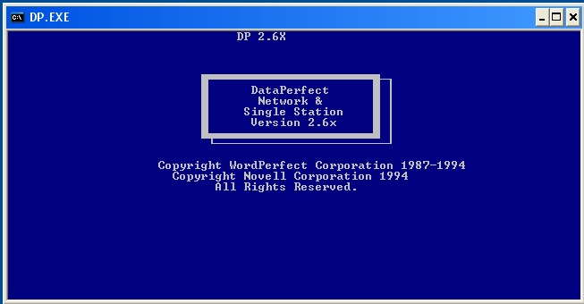
- Microsoft Word 5.5 - The last version for DOS of Microsoft's all-conquering word processor.
- Released as freeware by Microsoft, Inc, supposedly as a Y2K update, but it contains the entire program.
- Word for DOS 5.x is a dual mode MS-DOS and OS/2 application. It supports operation under 16-bit OS/2 1.x console mode.
- Version 5.5 changes the user interface. It adds Mac/Windows features like pulldown menus and overlapping windows.
- Packages include standalone format translators - Word<->DCA, RTF<->DCA, DOS<->Word, & more.
- The UK English version has the largest selection of printer drivers.
- You can install all four if you like - they won't clash. Start the one you want with the command WORD55XX where XX is one of UK, US, DE or FR.
- As delivered, this package has drivers for VGA and a Hewlett-Packard LaserJet printer.
- To change these, go to the SETUP directory and run SETUP.EXE.
- When you get to the point where it asks if you want to setup a new WORD or change an existing one, choose the second option and then in the next screen give the directory name as c:\FDOS\PROGS\WORD55XX where XX is one of UK, US, DE or FR.
- You can also change the initial display mode (default: text-mode) in the same way.
- Downloads:
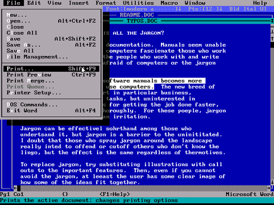
- PC Word 1.90: A fast, compact, flexible text processor
- Uses HyperText functions to facilitate links for Table of Contents and Index, with automatic page numbering.
- Freeware by Andrew Sprott.
- Also includes RSORT, a text file sorting utility based on the sorting functions inPcWord
- RSORT is self explained and is ready to run. Source code is included.
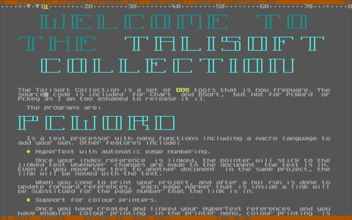
- Rebel - character mode spreadsheet without mouse support.
- REBEL 3.x has been developed to satisfy the demand for a spreadsheet that offers unlimited customization potential.
- The entire spreadsheet is patterned after a high level programming language.
- By adding new functions and utilities, it can be tailored to fit the needs of virtually any user group.
- Freeware by Brad L. Smith
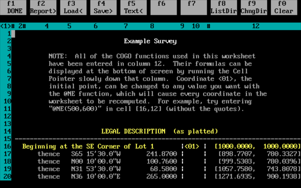
Return to Table of Contents
Graphics applications
- Animator - (AKA Autodesk Animator, Video Paint, or simply V) is a 256 color paint and animation package.
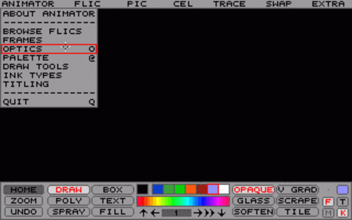
- MVP Paint - Graphics editor.
- Shareware by MVP Software
- MVP Paint is a full-featured graphics workshop.
- With MVP Paint you can easily create or modify graphics or animation files.
- It supports a variety of advanced features, and has been used to develop two MVP Software games, Sand Storm and Corncob 3D.
- Originally created as an in-house game development tool, it has been tested extensively in real-world applications.
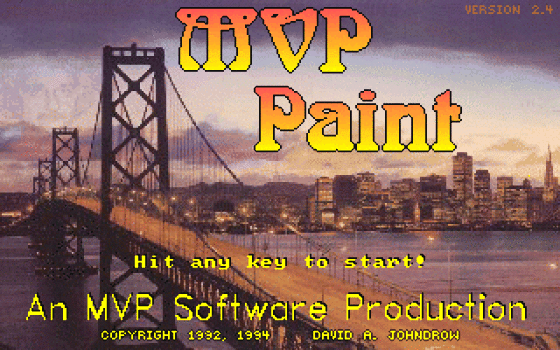
Return to Table of Contents
Programming languages etc.
- Agena 2.12.2 - an interpreted procedural programming language.
- Dual-licensed GPL v2 and MIT
- A new easy-to-learn procedural programming language.
- Suitable for scientific, mathematical, scripting, networking, and many other applications.
- Binaries are available for Solaris, Windows, Linux, OS/2, Mac OS X, Raspberry Pi and DOS.
- Source included.
- Under active development, so keep an eye out for updates.
- Alice - an IDE for the Alice dialect of Pascal, with a runtime interpreter.
- Freeware by Brad Templeton.
- This package contains all the tutorials and manuals mentioned on the website, a review of the Atari ST version, and a Russian translation of the website.
- The package defaults to the "large" version of Alice, which can use 640K of memory. The "regular" version is still there if you need it, but really, how many people are now working on a 256K system?

- Moonrock 0.5 - A BASIC-like language with several extensions.
- Produces small and tight executables.
- 8086, 80186+ or 80386+ code.
- DOS real mode or DPMI protected mode.
- Includes compiler, ArrowSoft assembler, documentation and sample programs.
- Freeware by Rowan Crowe.
Return to Table of Contents
Games
- ShuffleV 1.1 - Tile shuffling game.
- Freeware for non-commercial purposes by J R Ferguson.
- Click a number joining the empty field to shift it, or use the cursor keys.
- Order the numbers from low to high, in rows left to right and columns top to bottom. The empty field must be in the lower-right corner.
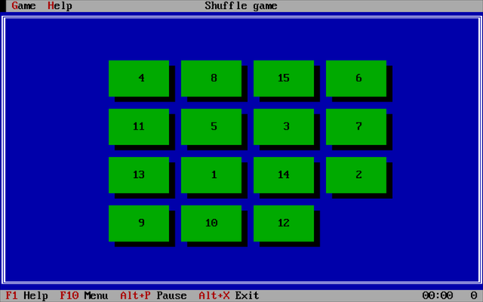
Return to Table of Contents
Eye Candy
- Acid Warp 4.2 - Run it and watch the pretty colors.
- Free Software by Noah Spurrier.
- CTRL-Break exits the program, If your keyboard does not have a Break key, CTRL-C also works ... eventually. You may have to hit it a few times.
- Source code included, but it is marked as "private proprietary source code" (see ACIDWARP.C), so I guess that is for inspiration only.
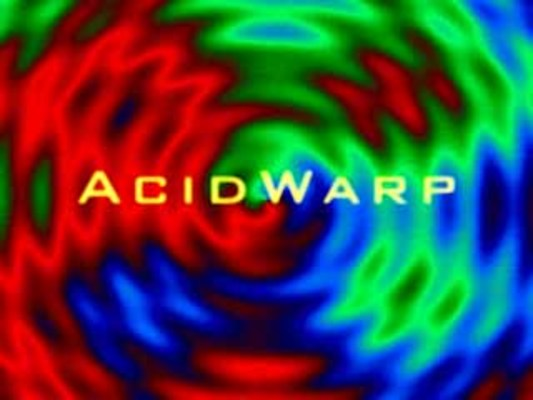
- DeciMatrix - Matrix-like screensaver.
- © Bruno Félix Rezende Ribeiro, released under GNU GPL v3.
- DeciMatrix is a program designed to decode the Matrix into decimal.
- It works with CGA, EGA and VGA graphic adapters and it runs on any IBM-PC compatible, the minimum requirement being an 8086 processor with 16Kb of RAM.
- It is based on the premise that it’s easier for people to become proficient in interpreting the Matrix code if instead of dealing with very cryptic symbols rolling down in the screen, they could deal with static and familiar symbols.
- It’s still quite hard to learn how to see through the code, though; but don’t worry — if you happen to never see the woman in red, at least you’ll have used a very cool DOS screen-saver.
- Packager's note: DCMATRIX does not clean up the screen mode after it closes, so you may want to issue a MODE CO80 afterwards.
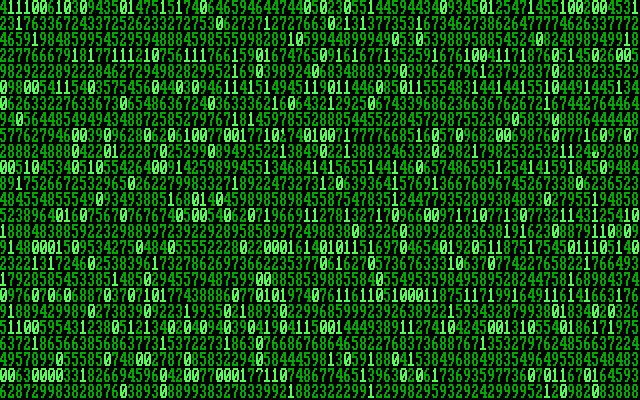
Return to Table of Contents
Command-line utilities
Most of these will end up in C:\FDOS\BIN. Please note that there are only so many filenames available when you have just eight characters to play with. If UNZIP asks whether to overwrite a file, think very carefully whether you want to use this file rather than the default FreeDOS one.
- ANTIWORD - Extract text and (hopefully) images from a Microsoft Word .doc (not .docx) file.
- BELIEF - generate random religious beliefs.
- Public Domain sofware (as far as could be ascertained) with additional data by Michel Clasquin-Johnson. See also this page.
- Compiled with BCC under FreeDOS 1.2
- Example output:
The Arian Theosophist Sect suspects that Darwin's "Origin of Species"
if read backwards, reveals cryptic messages from the last practicing
medicine man of the Mohicans, and says that only the faithful will
achieve reincarnation.
- BFIND - Enhanced FIND command.
- The BFIND.EXE program adds Boolean logic to DOS's FIND command.
- Freeware for personal use by Bruce Guthrie.
- See the LSM file for instructions.
BLRUT - Bud L Rasmussen's Utilities are 28 general purpose DOS utilities, written in assembly language.
- BD -- Backup Directory
- BHD -- Backup Hard Disk
- BLF -- Backup Large File
- BLRUT -- Executable form of BLRUT55.DOC
- CACF -- Copy And Convert File
- CF -- Copy File
- DBPB -- Display BIOS Parameter Block
- DCM -- Directory Copy/Move
- DDBT -- Display Disk Base Table
- DKV -- Display Key Value
- DPT -- Display Partition Table
- DSE -- Disk Sector Edit
- EADF -- Erase All Diskette Files
- EBU -- Execute BLR Utilities (menu/shell)
- FCM -- File Copy/Move
- FFD -- Format Floppy Diskette
- FRE -- File Record Edit
- LPAF -- List/Print Any File
- LPD -- List/Print Directory
- LPS -- List/Print Sector
- LPTF -- List/Print Text File
- LTF -- List Text File
- PSF -- Print Spooled File
- QDL -- Quick Directory List
- RLF -- Restore Large File
- RSD -- Rename Sub Directory
- SD -- Space Display
- SLTF -- Split Large Text Files
- TFC -- Two File Compare
- VLCC -- Volume Label Change, Compare
DOSPDF - PDF viewer.
- An outragous hack by Mateusz Viste "Fox".
- This crashes my DOSBox, but works (slowly!) on a real FreeDOS install.
- Use it when the old Acrobat for DOS chokes on a modern PDF.
- Requires the CDD command - everything else is included, even a working installation of Alladdin Ghostscript.
- I've done the SETUP already and copied the resulting batch file into /FDOS/BIN, so it should be ready to run.
Figlet - A program that creates large characters out of ordinary screen characters.

GUTREAD - read texts from the Gutenberg Project (or any other text file) and remove all the newlines saving hours of editing in your word processor.
- It will also produce the text in XML format.
- See the LSM file for instructions
OZWOZ - the OZWOZ Utilities.
- A collection of 35 command-line utilities.
- Freeware for personal, non-commercial use.
- 3812PRN -- IBM 3812 Pageprinter driver.
- ALARM -- TSR pop-up alarm clock.
- CHANGE -- Change text in one or more files.
- CHECKTD -- Check current time and/or date and set errorlevel.
- CLEARKEY -- Clear "n" keystrokes from the keyboard buffer.
- CURSOR -- Set cursor shape and style.
- ERRORLVL -- Set the DOS errorlevel (return code).
- EXERCISE -- Exercise a local or network file system and show performance.
- FF -- Find file/s and change to directory if required.
- GETOID -- Return Novell Netware object ID for user, groups, etc.
- LOCK -- Simple network single application lock.
- LS -- List file directories with many many options.
- MAIL -- Simple mail facility for Novell Netware with a delay send option.
- MAKEMENU -- Self maintaining menu utility with no executing memory overhead.
- NETTALK -- User talk/chat utility for Novell Netware.
- PLAY -- Play music and write your own.
- RESET -- Presses the reset button and/or CTRL+ALT+DEL.
- SATTRIB -- Modify attributes including hidden, system and sub-directories.
- SAVEDIR -- Save current directory to a self restoring batch file.
- SAVEPATH -- Save current path setting to a self restoring batch file.
- SAVESCR -- Save/restore current text screen contents and attributes.
- SCOPY -- Copy, move, update, break, concatenate files. By name, date, etc.
- SCRTYPE -- Return screen type in use. CGA, MCGA, HERC, VGA, EGA, MONO, etc.
- SD -- Select directory via a menu. Goes well with MAKEMENU utility.
- SDEL -- Delete files including hidden, protected, in sub-directories, etc.
- SETVPINF -- Change default directory stored in Ventura Publisher's VP.INF file.
- SHOWTD -- Show current time/date with many options including a clock.
- SLEEP -- Sleep for specified period. Can set for keyboard to interrupt.
- STUDY -- Study helper. Asks questions randomly & gives answers and scores.
- STUFFKEY -- Stuff keys into the keyboard buffer. No overhead or TSR used.
- STYPE -- Display files contents with many convert, filter, skip, options.
- TESTFILE -- Test accessability of a file under many modes. Good network tool.
- TPBEAUT -- Prepare Turbo Pascal 5.5 code for output to a printer.
- TYPEBACK -- Type a text file line by line backwards. Good for listing logs.
- TYPEDW4 -- Types the DisplayWrite 4 EBCDIC file specified.
SHOW 1.4 - Text file Viewer.
- Freeware by Horst Schaeffer.
- SHOW is a small DOS viewer for ASCII text files.
- The program was primarily made for use in batch files, as it does not come with its own "Open" dialog and directory browser.
- See the LSM file for instructions.

- VIEWHT - Quickie HTML viewer and converter.
- Freeware by Kevin Solway.
- A very useful tool for viewing web documents off-line, with hypertext linking and colours.
- You can also use this program to simply convert HTML documents to standard text files.
- Uses XMS for large files.
Return to Table of Contents
Terminate-and-stay-resident utilities
Not a priority, sorry. These things can crash your system mightlily if you invoke them while in the wrong screen mode.
Still, if and when I do find some that are sufficiently robust and useful, I will post them here.
Return to Table of Contents
Miscellaneous
- BigText by Kevin Solway- Create self-displaying illustrated books & manuals.
- A suite of programs that turns ordinary text files into self-contained, self- displaying executable files capable of displaying full colour illustrations in body of the text.
- This program is specifically designed to make self-displaying books, manuals, documents, and catalogues.
- The difference between Bigtext and similar programs is that it can handle genuinely BIG volumes of text (up to 700kb or more) and that it creates a single, neat and convenient executable file.
- Ignore all the shareware documentation: according to the website this is now freeware.
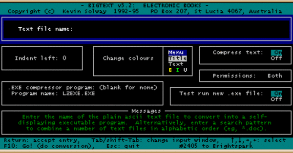
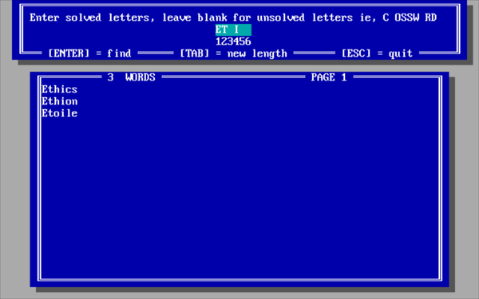
Return to Table of Contents
FreeDOS Tips
These are just a few tricks that I figured out to make my life in FreeDOS a little easier.
1. Fix the floppy drive blues.
Who still has a computer with a floppy drive? But old DOS apps assume that it is there and will throw up error messages if you accidentally select that drive. Here's the fix:
MKDIR C:\FDOS\DRIVEA
MKDIR C:\FDOS\DRIVEB
Now include the following lines in your AUTOEXEC.BAT
SWSUBST A: C:\FDOS\DRIVEA
SWSUBST B: C:\FDOS\DRIVEB
Return to Table of Contents